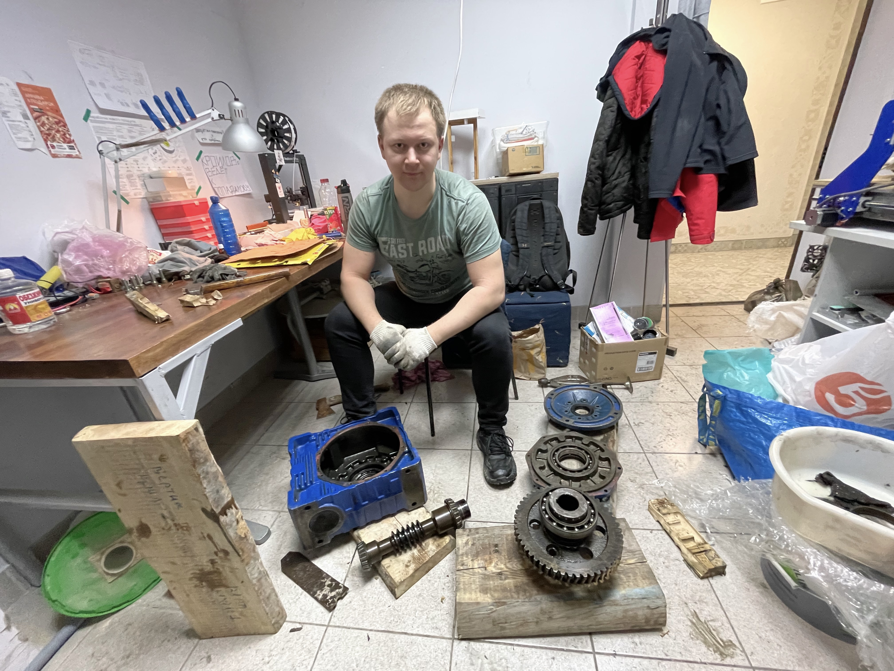
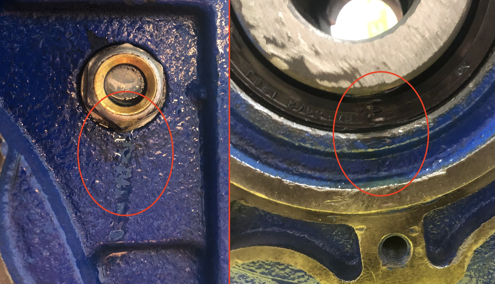
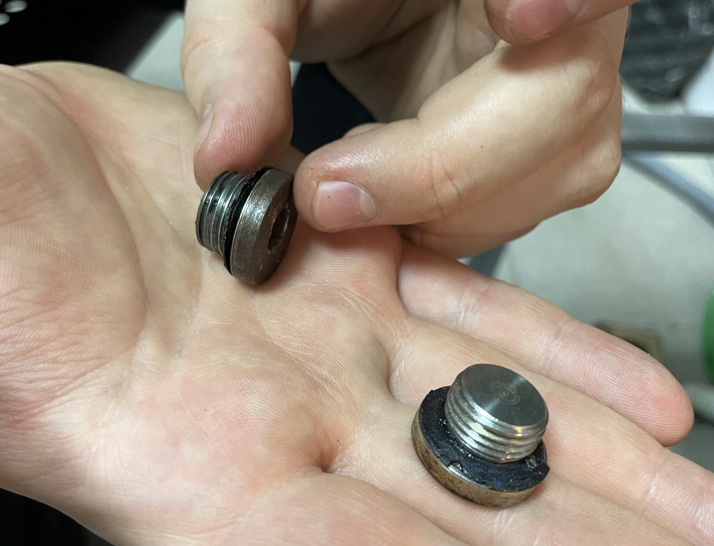

Шреддер для пластика #3: Разборка редуктора NMRV150
Навигация по проекту:
- Выбор мотор-редуктора
- Внешний осмотр редуктора, проверка размеров
- Разборка редуктора NMRV150
- Редуктор (новости) и точёные валы

После внешнего осмотра редуктора было выявлено две течи масла: из смотрового окошка и одной из манжет выходного вала.

Первым дело необходимо слить масло, тк объём масла 6-7 литров, безопаснее сделать это в ведро.
Как видно резинки на фотографии резинки заглушек ссохлись и плохо выполняли свою роль.

После удаления масла необходимо снять крышку. Съёмная крышка находится и одной из стоорон, для снятия необходим шестигранник на 8мм.

На обратной стороне крышки наиболее наглядно можно оценить количество бронзовой стружки.
Снять венец не получится: он блокируется червяком. Поэтому далее необходимо снять фланец редуктора (для этого необходим шестигранник на 10мм) и выбить подшипник червяка наружу. После чего удалить червяк. Затем разблокируется венец.
На видео изложены все этапы разборки редуктора.
Следующим шагом буду отмывать части редуктора.